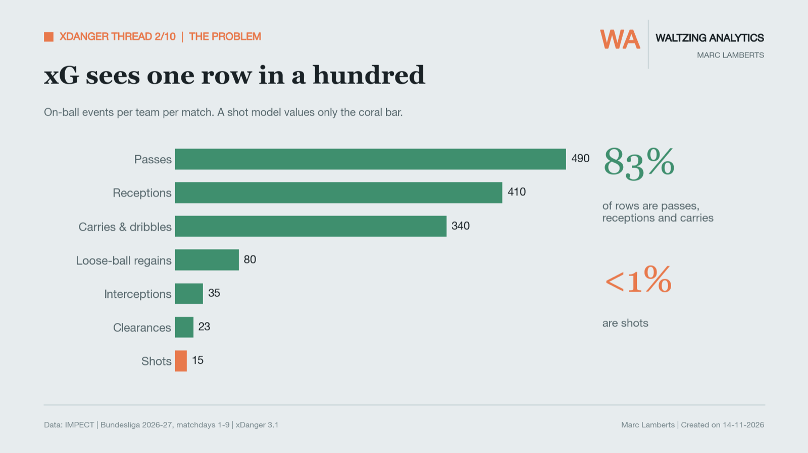
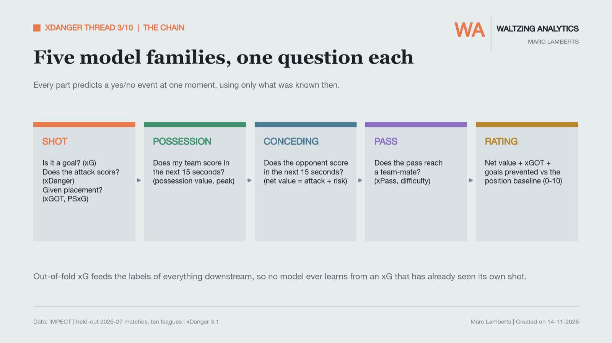
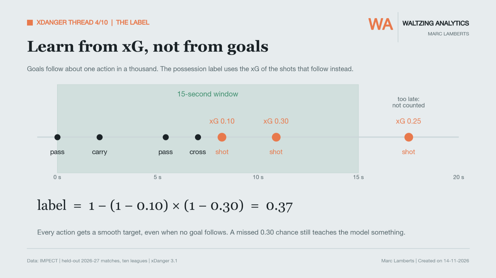
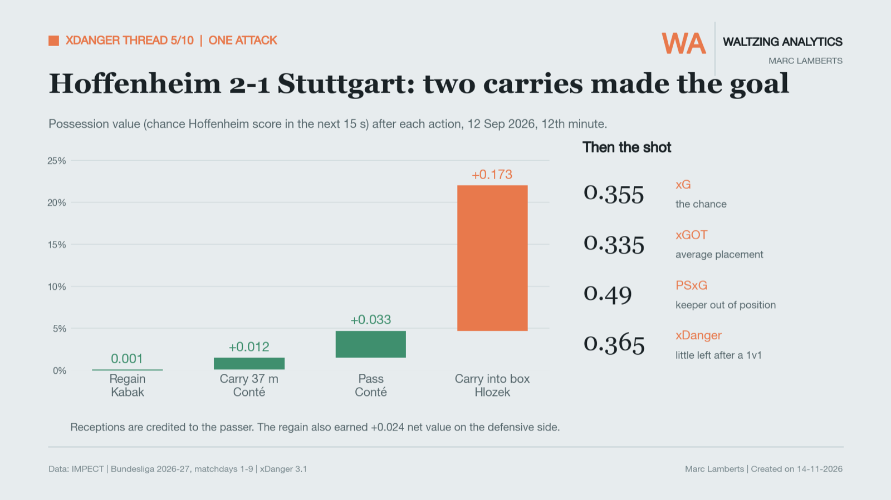
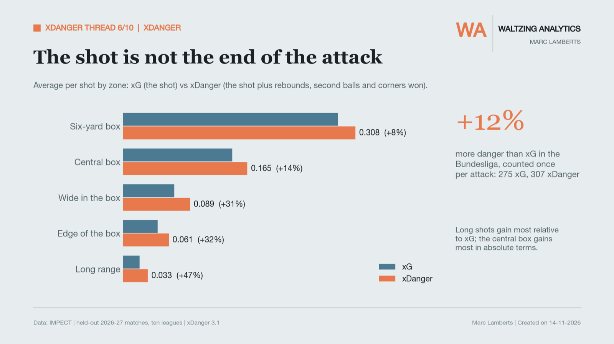
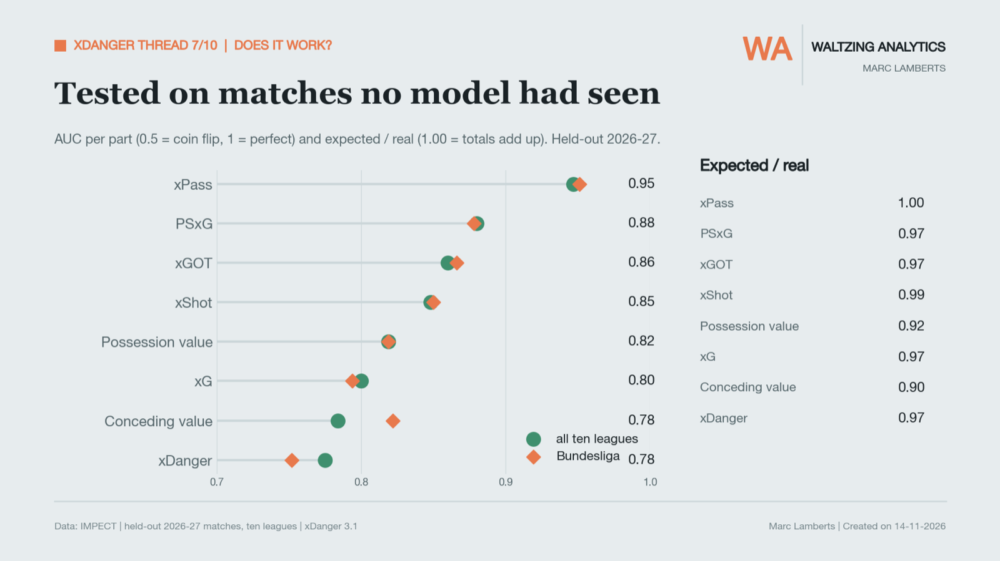
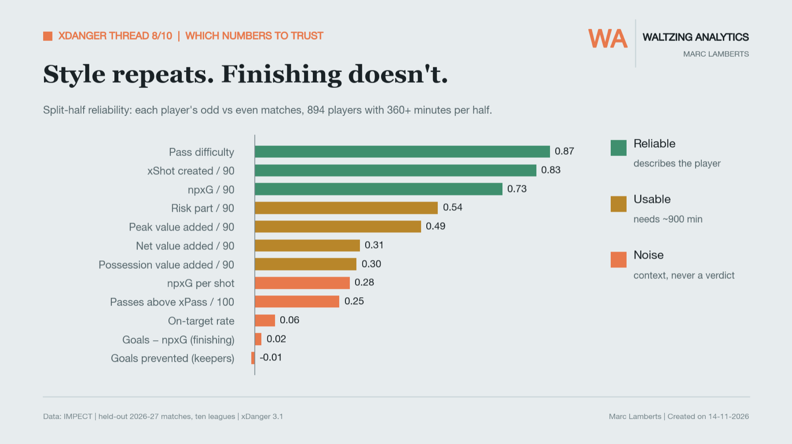
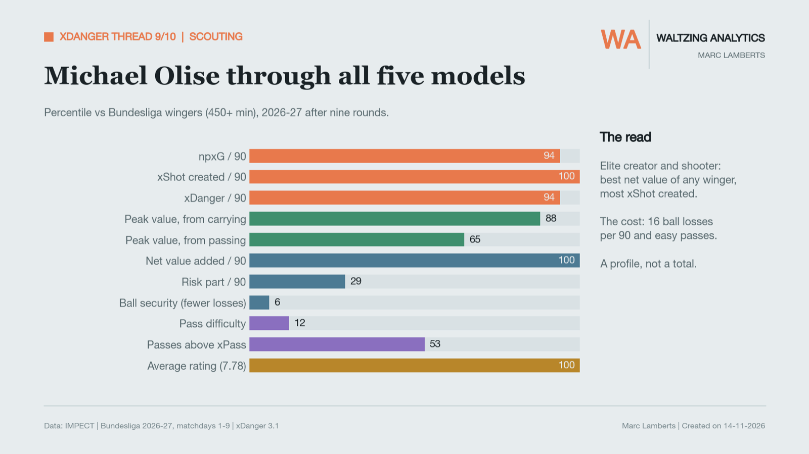
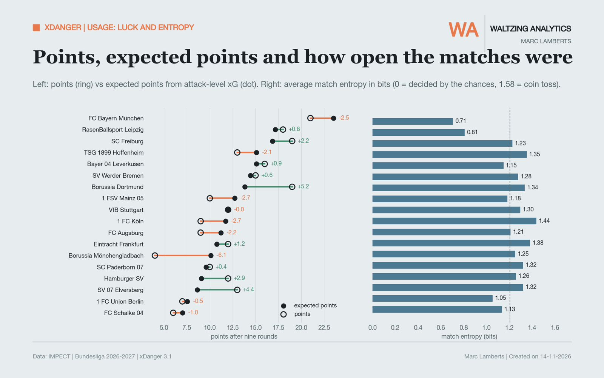
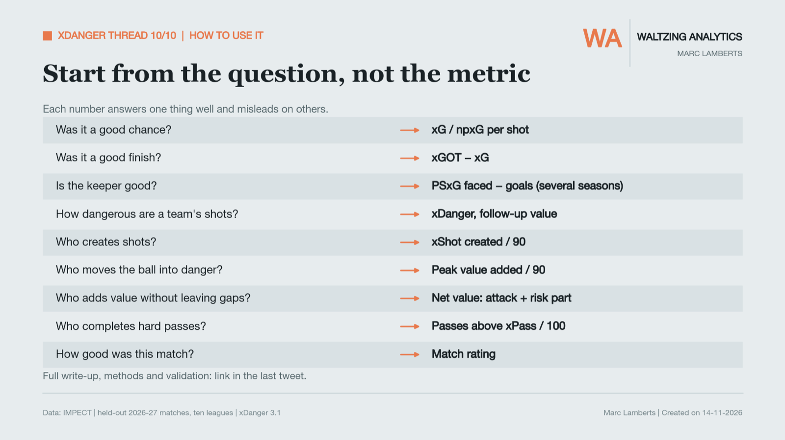

xDanger: one ecosystem for shot models, possession value and ratings
Nine probability models, one unit, every action on the pitch. This page is the short version of how it works.
1The problem
Expected goals tells you how good a shot was. But a Bundesliga match has about 3,000 on-ball events and fewer than 30 shots, so xG only ever looks at one row in a hundred. Everything that decided whether the chance existed happened before it.

There are good models for the rest: expected threat, VAEP, goals added, on-ball value. I kept running into the same wall using them together, though. They don't share a unit, they don't feed into each other, and most of them stop at the shot. xDanger is my attempt to put all of it in one system.
2One question per model
Every part of xDanger answers exactly one yes/no question about the near future, at one moment, using only what was known at that moment. So every output is a probability, and every probability can be checked against what happened.

Possession model. Does my team score in the next 15 seconds?
Conceding model. Does the opponent score in the next 15 seconds?
Pass model. Does the pass reach a team-mate?
Rating. Net value + xGOT + goals prevented, compared with the position baseline, on a 0–10 scale.
3Learn from xG, not from goals
Goals follow about one action in a thousand, which is far too rare to learn from directly. So the possession and conceding models learn from the xG of the shots that follow an action within 15 seconds. The label is the chance that at least one of those shots goes in:

The xG used here is out-of-fold: every shot gets its xG from a model that never saw that shot's match, so nothing further down the chain learns from numbers that are slightly too good.
Try it: one attack, several shots
Enter the xG of each shot in one attack. Adding them up over-counts, because a rebound only exists when the first shot missed. The attack can only score once.
4Value added, action by action
Once every action has a value, crediting a player is a subtraction: value after the action minus value before it. Receptions go back to the passer, ball wins count as value won, shots are left to the shot model, and restarts start from their own baseline.

Run the same subtraction on the conceding model and you get each action's effect on the opponent's chances. Put them together and you get net value:
That is the number the rating is built on, because it is the only one that puts attacking and defending in the same unit.
5The shot isn't the end of the attack
xG asks whether this shot goes in. xDanger asks whether the team scores from this shot or anything after it before the attack ends: the parried save, the second ball after a block, the corner won from a deflection.

One thing I learned the hard way: count it per attack. Added shot by shot, the Bundesliga season so far comes to 285 xG and 331 xDanger. Counted per attack it's 275 and 307, and the 275 matches the 274 goals actually scored.
6Does it work?
Everything is trained on 71 IMPECT league-seasons (2024 to 2025–26, 59.5 million events) and tested on 2026–27 matches that no model had seen.

7Which numbers can you trust?
Split every player's matches into odd and even and correlate the two halves. Style and volume repeat; finishing doesn't, at least not over half a season.

8Players, teams and luck

The same attack probabilities give every match a distribution of results, and so expected points. Luck is points minus expected points; entropy is how open a match was before the goals went in.

9How to use it

- Below about 450 minutes, don't rank anyone on a single metric.
- For teams and attacks, use attack-level xG and xDanger, 1 − ∏(1 − p), never the sum of shots.
- Treat finishing and keeping as context, not verdicts.
- It's event data: off-ball runs and defensive shape are invisible, and value added is association, not causation.
10Read more
- The full article on Medium: every model, the training, the testing and three Bundesliga case studies.
- One-page summary (PDF)
- Academic paper with the methods and results (PDF)